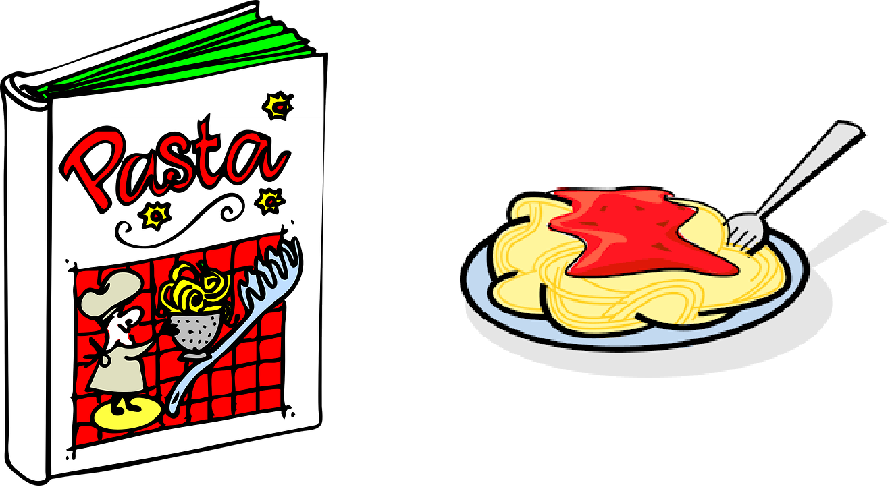
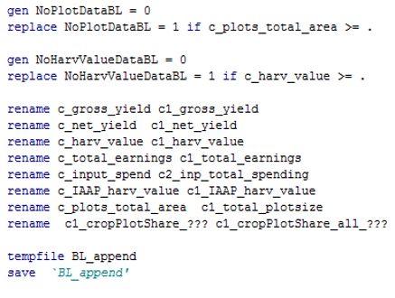
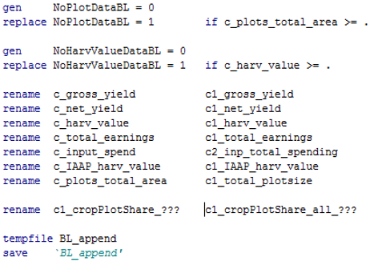
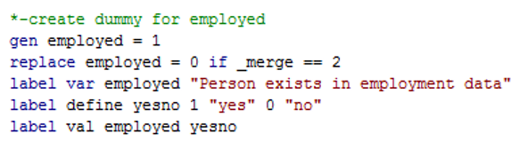
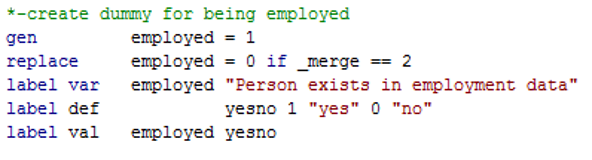

Introduction to statistical programming
Kristoffer Bjarkefür, Luíza Andrade, Sushmita Samaddar
Excel vs. Stata (or R, Python etc.)
The main reason why we code
- In Excel you make changes directly to the data and save new versions of the dataset
- In Stata you make changes to the instructions on how to get from the raw data to the final analysis and save new versions of the instructions
Your code is an output
Create recipes, not just meals

We are tempted not to write recipes
- We are hungry, and we want to cook a delicious meal!
- So we grab all our ingredients, and start mixing them together
- As we do so, new ideas keep occurring to us and we add some more ingredients
- Our meal turns out to be delicious and we are very satisfied
But skipping this step may cost you a lot of time
- Some time after that, we want to have that delicious meal again…
- …but alas, we don’t remember how we got to the end result
- What kind of potatoes did we use?
- Did we boil them before putting them in the oven?
- Did we use rosemary or dill?
But skipping this step may cost you a lot of time
- When we are eager to get to the end result, we may skip important steps
- We often assume that we will remember what we did and why, but that is not always the case if we did not write things down
- In the end, we may spend a lot of time and effort trying to reinvent a recipe we had already invented!
Create recipes, not just meals
- We are handling data because we want to analyze it
- Our goal is to create informative graphs and tables (our delicious meals)
- This is a very important goal, but it is important to also think of the recipe as an equally (if not more) important creation!
- If we write recipes that create delicious meals, we can have them as many times as we want
- Current and future team members will read and contribute to the same set of recipes and keep improving them
- Therefore we need to write recipes that other people can follow too
Key ingredients: Tabular data sets
Data can be organized in a lot of different ways. During this courses, however, we will work with one particular form of organizing data: tabular data
- Tabular data is organized in rows and columns
- Each row describes one individual or member of a class
- Each column contains information about characteristics of the individuals being described
- Each row contains the same number of cells (although some of these cells may be empty)
- Each cell within a same column provides information the same property of the things described by each row
Key ingredients: Tabular data sets

Some semantics
- A single instance of tabular data is called a data table
- Each cell in a data table is called a data point
- A variable is a collection of data points representing the same characteristic
- An observation is a collection of data points representing the same case of data being collected
- A data set is a collection of one or more data tables
Key ingredients
What is the first thing you want to look for every single time you open a new data table for the first time?
1. Unit of observation
2. Uniquely and fully identifying ID variable
household_data.csv
| hh_id | comid | dist_id | hh_number | hh_head | hhh_age |
|---|---|---|---|---|---|
| 22501 | 25 | 2 | 1 | Andrew | 52 |
| 22502 | 25 | 2 | 2 | Patrick | 48 |
| 23207 | 32 | 2 | 7 | Charles | 29 |
| 23205 | 32 | 2 | 5 | Jeffrey | 37 |
| 12501 | 25 | 1 | 1 | Walter | 48 |
| 11103 | 11 | 1 | 3 | Anne | 26 |
| 11205 | 12 | 1 | 5 | Lawrence | 61 |
| 24502 | 45 | 2 | 2 | Dennis | 45 |
| 24501 | 45 | 2 | 1 | Nancy | 41 |
clinic_data.csv
| clinic_id | clinic_number | dist_id | patient | age |
|---|---|---|---|---|
| 2452 | 542 | 2 | Andrew | 52 |
| 2543 | 543 | 2 | Patrick | 48 |
| 2156 | 156 | 2 | Charles | 29 |
| 1152 | 152 | 1 | Jeffrey | 37 |
| 1152 | 152 | 1 | Walter | 49 |
| 1238 | 238 | 1 | Anne | 26 |
| 1122 | 122 | 1 | Lawrence | 61 |
| 2122 | 122 | 2 | Dennis | 45 |
| 2122 | 122 | 2 | Nancy | 41 |
Key ingredients: ID variables
- Make sure all your data tables have an ID variable
- If you are handling a data table that does not have one, then creating it is your first task
- IDs variables must be uniquely and fully identifying
- We will talk more about what this means and how to test if a variable is uniquely and fully identifying in Stata later on in this course
Key ingredients: ID variables
Exercise: Open DataWork/Data/Clean/item_clean.dta and use browse to see contents of the data table. Can you tell what is the unique identifier?
Lay out your ingredients before your start cooking
Before we start cooking, we need to think about what we are trying to cook and what is the best way to cook it
- How do I code so it is the most helpful for other people in my team?
- How is my data really structured?
- How do I communicate the data structure in my project?
How to think about what you are doing
The DIME Analytics’ Data Map Template has three components:
- Data Linkage Table: Meta data of all original data sets in your project
- Master Dataset(s): Keep track of all units for each level of observation
- Data Flowchart(s): How analysis data sets should be created
Data Linkage Table
- Each row is an original data table.
- List the ID variable for the unit of observation.
- List back-up locations for all original data.
- Give each data table a name that is easy to say and write. Use only this name to refer to the dataset.
See more examples at https://dimewiki.worldbank.org/Data_Linkage_Table
Master Data Set
- One data table for each unit of observation in the data linkage table
- List all units that the project ever encounters, even if they will not be used for analysis
- The authoritative source for all identifying information
See more examples at https://dimewiki.worldbank.org/Master_Dataset
Data Flowcharts
- Each starting point is a Master Data Table or a data table listed in the Data Linkage Table
- List the unit of observation and variables used to identify data tables before and after each data processing operation
- Include number of observations to track whether observations are lost or duplicated

See more examples at https://dimewiki.worldbank.org/Data_Flow_Charts
Is this slide easy to read?
White Space. Stata does not distinguish between one empty space and many empty spaces, or one line break or many line breaks. It makes a big difference to the human eye and we would never share a Word document, an Excel sheet or a PowerPoint presentation without thinking about white space - although we call it formatting.
White Space
- Stata does not distinguish between one empty space and many empty spaces, or one line break or many line breaks
- It makes a big difference to the human eye and we would never share a Word document, an Excel sheet or a PowerPoint presentation without thinking about white space – although we call it formatting
Vertical lines
 
Vertical lines
 
Style Guides
- Style guides are common in most programming languages
- Following a style guide will make your code much more readable, and it will reduce the risk of errors
- Stata styleguide: https://worldbank.github.io/dime-data-handbook/coding.html
Where are the graphs?
- Nothing I have said so far relates to analysis
- In coding, analysis is the easy part as long as the data is properly set up for analysis
- It is much easier to google or to ask someone how to use analysis commands than how to clean, manage and monitor the quality of your data
Critical thinking about data
Trust your instincts
- Do I believe this number?
- How do I expect these variables to relate to one another?
- How do they relate?
Critical thinking about data
Trust your instincts
- Do I believe this number?
- The bid submission period is -24 days
- How do I expect these variables to relate to one another?
- How do we expect process initiation date and bid submission date to be related?
- How do they relate?
How do I get better?
- Practice
- Find tasks that you need to do and use code to do them
- It will take longer at first, but it will end of saving you time
- Use help files as often as possible!
- Even with familiar commands, there is always more to learn
- In Stata, there are a reference manual that you access by clicking
[R] command_namein the help file where the developers at Stata Corp discuss coding practices, common mistakes, alternative approaches etc.
- Help files are not the only place to learn
- Follow blogs and twitter accounts that discuss best practices
- Follow the tag for your programming language on https://stackoverflow.com/
How do I get better?
- Have someone else read your own code
- Swap code with someone and discuss differences in coding style. Think of each other’s code as recipes, can you follow the instructions?
- Have you ever asked someone to help you proofread your Word document? Ask people to proof read you code.
- If no one is available to help, read your own code as a recipe. Would you be able to follow the instructions if you were a new person joining the team?
How to ask for help
No matter who you ask: your colleagues, Stack Overflow, google. Getting a helpful answer for your question depends on asking a good question.
- You will never get a good answer if you only say “my code is not working”
- In good code question etiquette, include at least:
- The error message or description of unexpected behavior
- The part of your code that breaks
- A description what you have tested so far and what you have learned
Much more details and advice on this topic at https://git.io/JtQTb and http://tinyurl.com/stack-hints
Summary
- Document decisions and meta data about your data
- Your code is an output, and should always be written so someone else can follow it like a recipe
- Think critically about the data
- Ask for help from your peers to review your code
- When writing code, format it as carefully as you would format a paper or a report